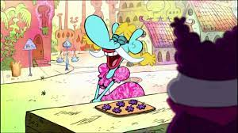

Burple Nurples!

What are Burple Nurples?
Burple Nurples come from the show Chowder. They are a purple flower-shaped snack with two flaps extending
from the top. These flaps open and close continuously and act as mouths that burp. The best quote from
this episode (Burple Nurples) is "Hey ugly! You owe me 300 dollaps!".
Ingredients
- 1 egg
- 2 sticks of butter, melted
- 1 cup of sugar
- 1 pinch of ground coriander
- 1 cup of flour
Steps to make Burple Nurples
- Preheat the oven to 320 degrees F
- Gently crack egg into a bowl
- Mix in sugar, then butter, flour, and coriander to make a dough
- Shape dough into small balls
- Place dough balls on a cookie sheet
- Bake for 1 hour
*Disclaimer!!! They will not look like they do in the show :(*